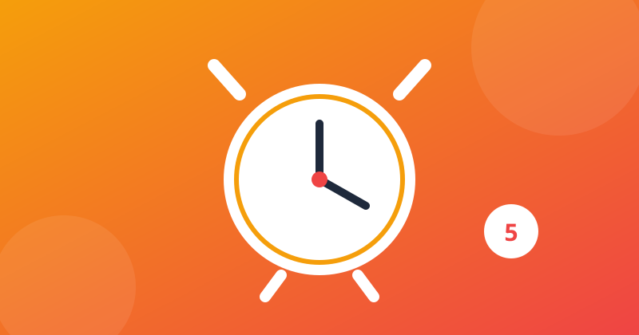

5 Best Free Alarm Clock Apps for Android (2026)

Every phone already has a clock app, so a third-party alarm has to earn its place: it must wake you up when the built-in one does not. We tested the most popular free alarm clocks on a mid-range Android phone for one question: which one actually gets you out of bed — and which one is just the same alarm with more ads?
What we tested
- Does it wake heavy sleepers? — missions, puzzles or loud alarms that stop you switching it off half-asleep
- Reliability — rings on time, every time, even after a restart or a system update
- Ads & paywalls — whether the free version is usable daily without a subscription
- Everyday use — snooze control, gentle wake-up, sleep tracking and per-alarm settings
1. Alarmy — best for heavy sleepers
Alarmy is built for people who switch alarms off in their sleep. To silence it you must complete a "mission": take a photo of a place you registered (like your bathroom sink), scan a barcode, solve maths problems, shake the phone or do squats. By the time you have done one, you are awake — that is the whole point. It also has very loud ringtones and a "prevent power-off" option that stops you switching the phone off to escape the alarm. The free version shows ads and some missions are paid, but the core wake-up features work without paying.
2. Google Clock — best free, no ads
Google Clock is the cleanest free alarm on Android: no ads, no in-app purchases, and it is free to install on any phone running Android 4.4 or later. It covers the basics well — alarms, a bedtime mode with a sleep schedule, timers, a stopwatch and a world clock — and on Pixel phones it adds a gentle sunrise alarm that brightens the screen before the sound starts. If your current clock app works but is full of ads, this is the simplest upgrade: install it and forget about it.
3. Alarm Clock Xtreme — best for customisation
Alarm Clock Xtreme, from AVG Labs, gives every alarm its own rules: maths problems at five difficulty levels, a password to retype, or a QR code you print and leave across the room. You can cap the number of snoozes, shorten each snooze, wake up to your own music or online radio, and it bundles a sleep tracker, stopwatch and timer. The free version shows ads, and the interface looks older than the others on this list — but if you want an alarm that behaves exactly the way you set it, this is the most configurable free option.
4. Sleep as Android — best smart wake-up
Sleep as Android is a sleep tracker with an alarm attached: it follows your sleep cycle through the night and wakes you gently in a light-sleep window instead of dragging you out of deep sleep. It can track without the phone in your bed using sonar, and it connects to Wear OS, Galaxy and Garmin watches. You get seven days of premium, then you choose between the free tier and an upgrade — the free tier still wakes you up, but the deeper sleep analysis is paid. Best for people who wake up groggy every morning and want to know why.
5. AMdroid — best for flexible schedules
AMdroid (also listed as Alarm Clock for Heavy Sleepers) lets you give every alarm its own settings — different sounds, snooze rules and missions per alarm — which suits shift workers and anyone whose schedule changes weekly. It adds location-aware alarms, a countdown timer for quick naps, and statistics on your snooze habits. The free version shows ads and has in-app purchases, but the scheduling flexibility is genuinely useful and hard to find elsewhere for free.
Quick comparison
| Alarm app | Wake-up trick | Ads (free) | Best for |
|---|---|---|---|
| Alarmy | Photo, barcode, maths & shake missions | Yes | Heavy sleepers |
| Google Clock | None — clean, simple alarm | None | Free, ad-free daily use |
| Alarm Clock Xtreme | Maths, password, QR code | Yes | Full customisation |
| Sleep as Android | Smart wake-up in light sleep | Yes | Sleep tracking + gentle mornings |
| AMdroid | Per-alarm settings, location alarms | Yes | Shifting schedules |
Note: prices and free-tier features change often — always check the Play Store listing before installing. We never link to cracked or modded apps.